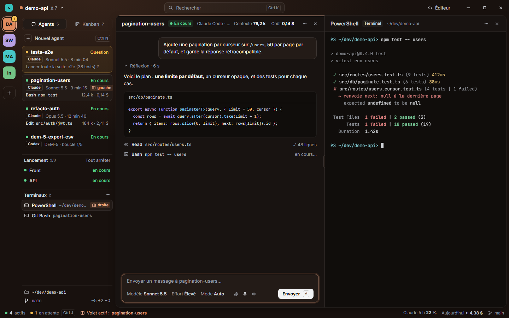
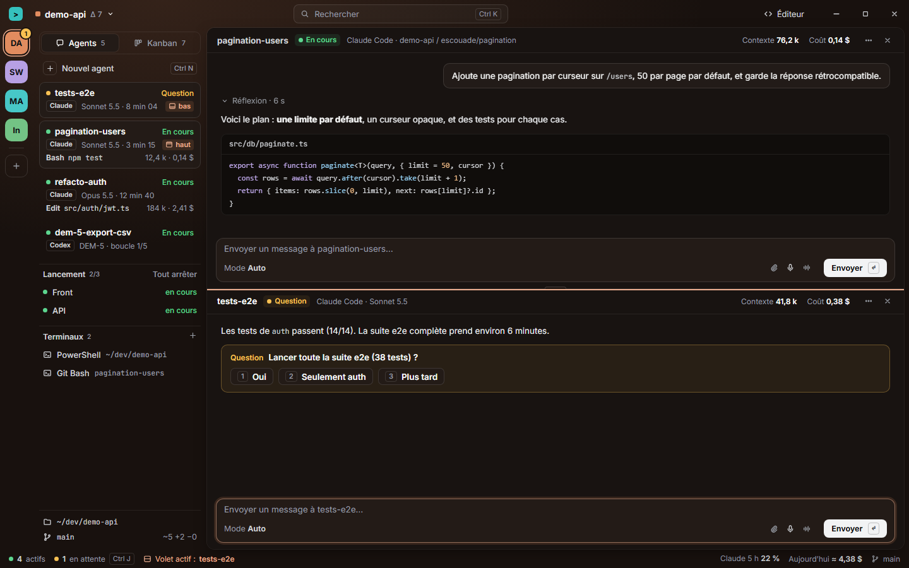
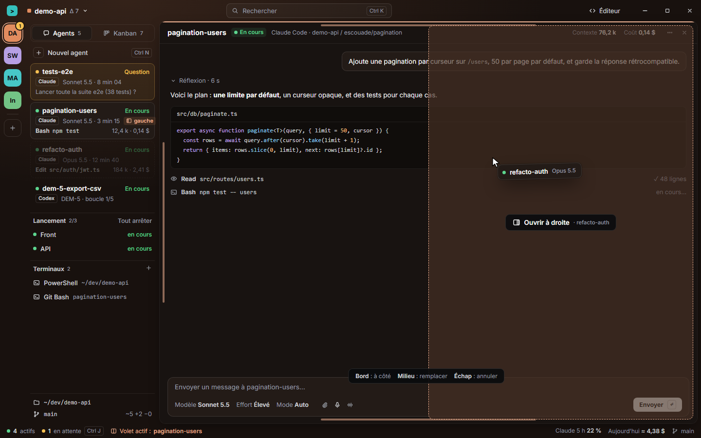
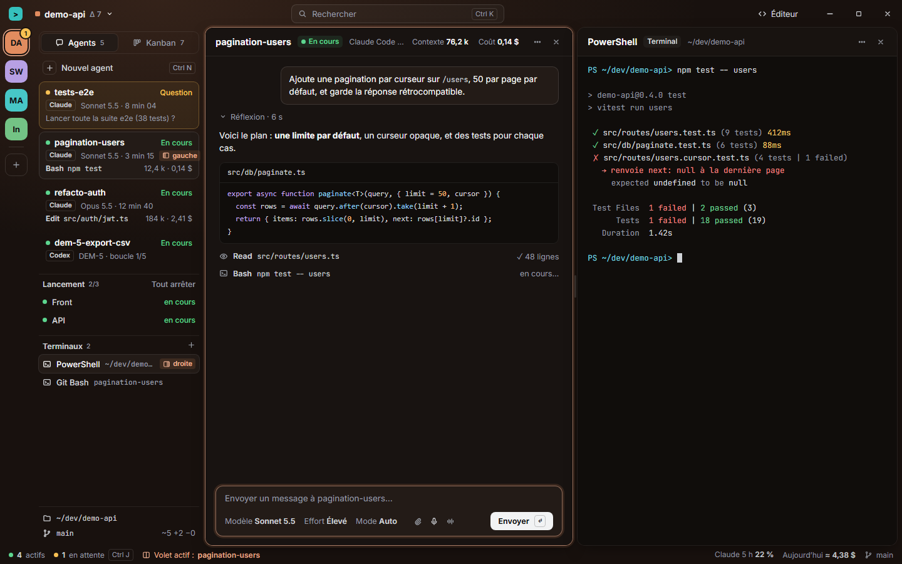
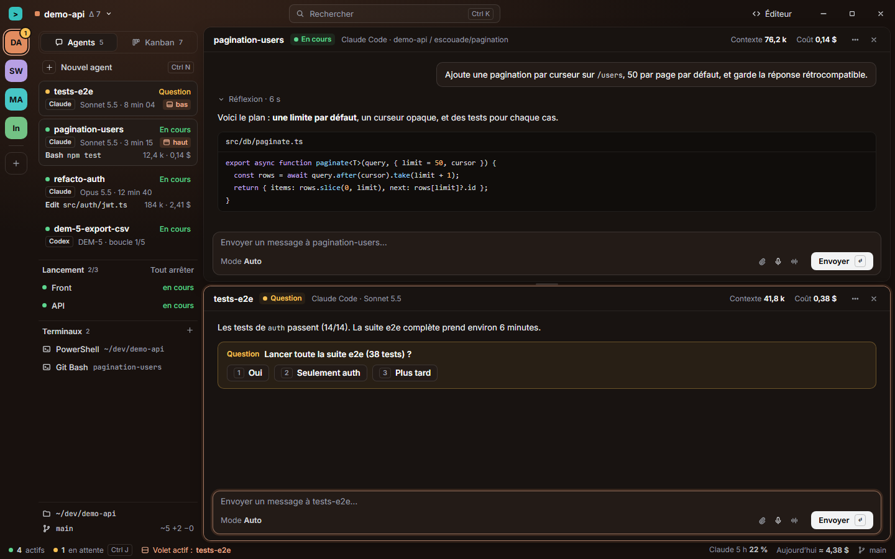
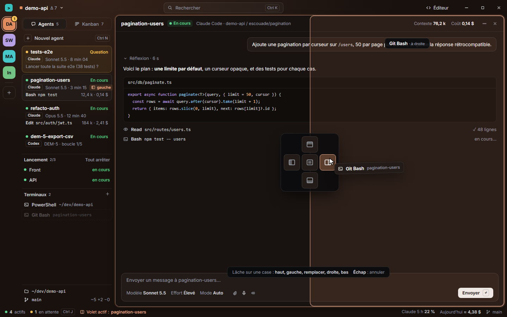
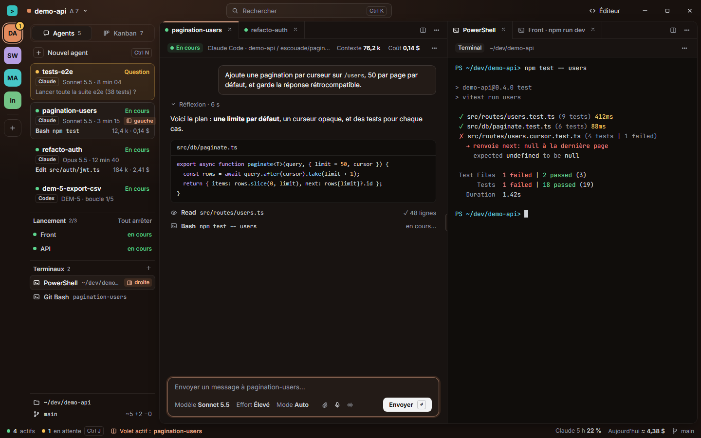
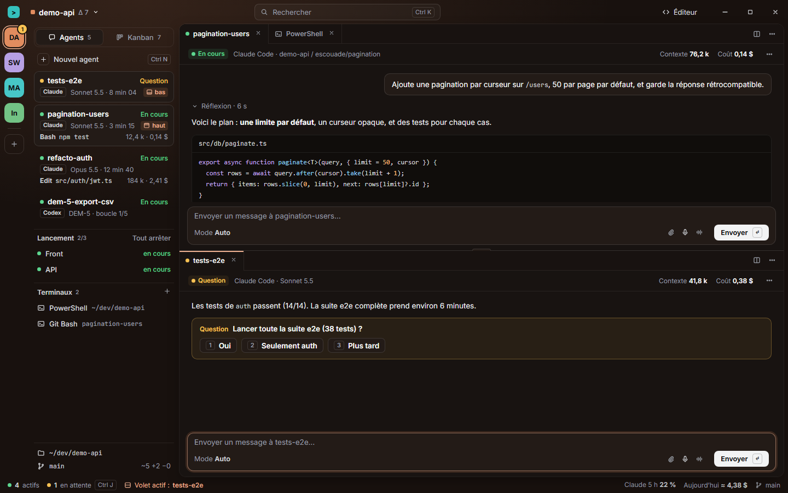
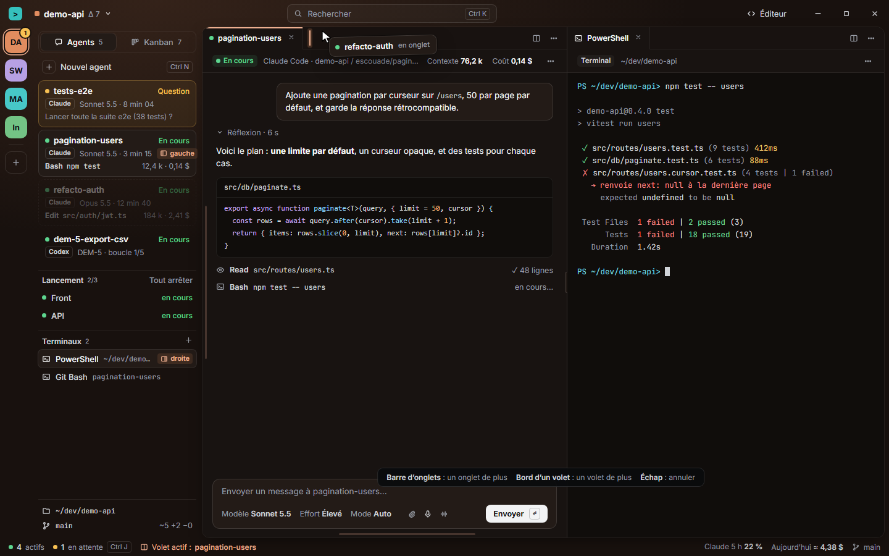

Deux volets dans la zone de travail, côte à côte ou l’un sur l’autre, remplis en glissant un agent ou un terminal depuis la barre
latérale (ou par « Ouvrir à côté » au clavier). Chaque direction est montrée dans trois états : un agent et un terminal côte à côte,
deux agents l’un sur l’autre, et le geste en cours. Rien n’est construit ; l’étude est dans
docs/SPLIT.md, les rendus viennent de apercu.html (node design/split-view/render.mjs).
La zone de travail reste un seul panneau ; les volets y sont séparés par un filet d’un pixel et sa poignée. Le volet actif porte un trait de la couleur du projet sur son en-tête et son champ de saisie s’allume. Pendant le geste, la moitié visée se remplit, avec « Ouvrir à droite » écrit dedans ; les bords se marquent.



Chaque volet devient son propre panneau, coins arrondis et ombre, avec le cadre teinté entre eux (8 px, la poignée au milieu). Le volet actif est entouré d’un anneau de la couleur du projet ; l’autre s’assombrit à peine. Pendant le geste, une boussole de cinq cases (haut, gauche, remplacer, droite, bas) s’ouvre sur le volet survolé et l’emplacement se dessine.



Chaque volet a sa barre d’onglets, comme l’éditeur : on y garde plusieurs agents et terminaux, on passe de l’un à l’autre sans toucher à la barre latérale. Lâcher sur une barre d’onglets ajoute un onglet (un trait marque la place) ; lâcher sur le bord d’un volet en ouvre un nouveau.


